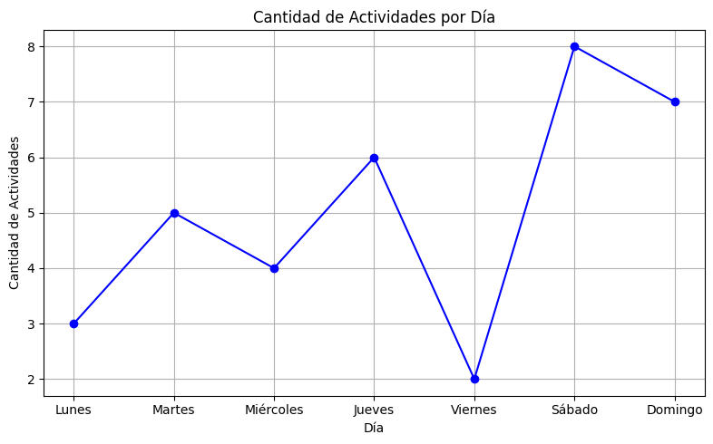
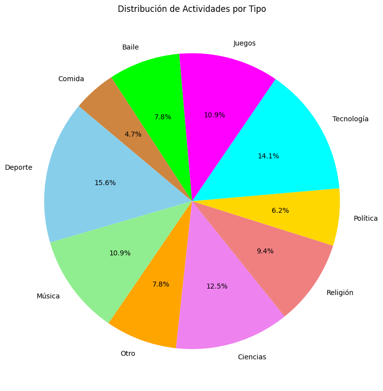
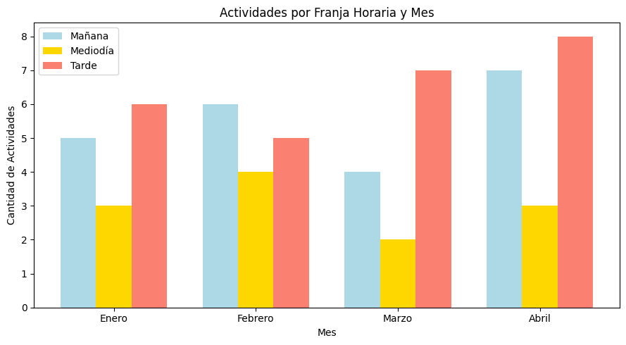

Cantidad de Actividades por Día
Este gráfico muestra la cantidad de actividades realizadas diariamente durante el mes de marzo.
Total de Actividades por Tipo
Este gráfico muestra la distribución porcentual de las actividades según su tipo.
Actividades por Momento del Día y Mes
Este gráfico muestra la cantidad de actividades realizadas en la mañana, mediodía y tarde durante los meses seleccionados.